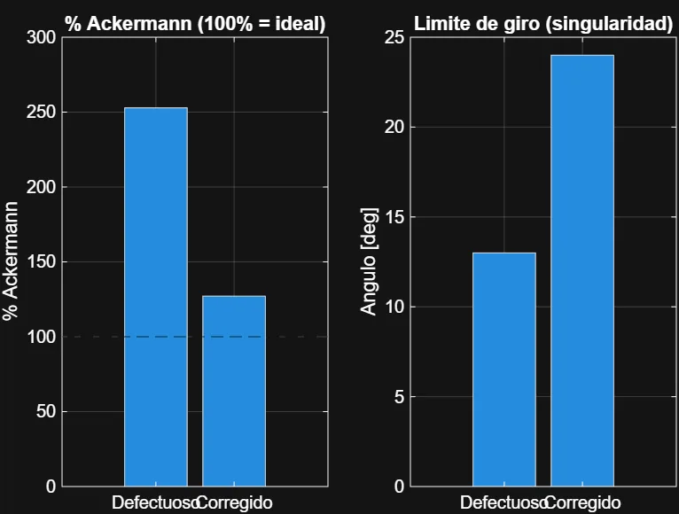
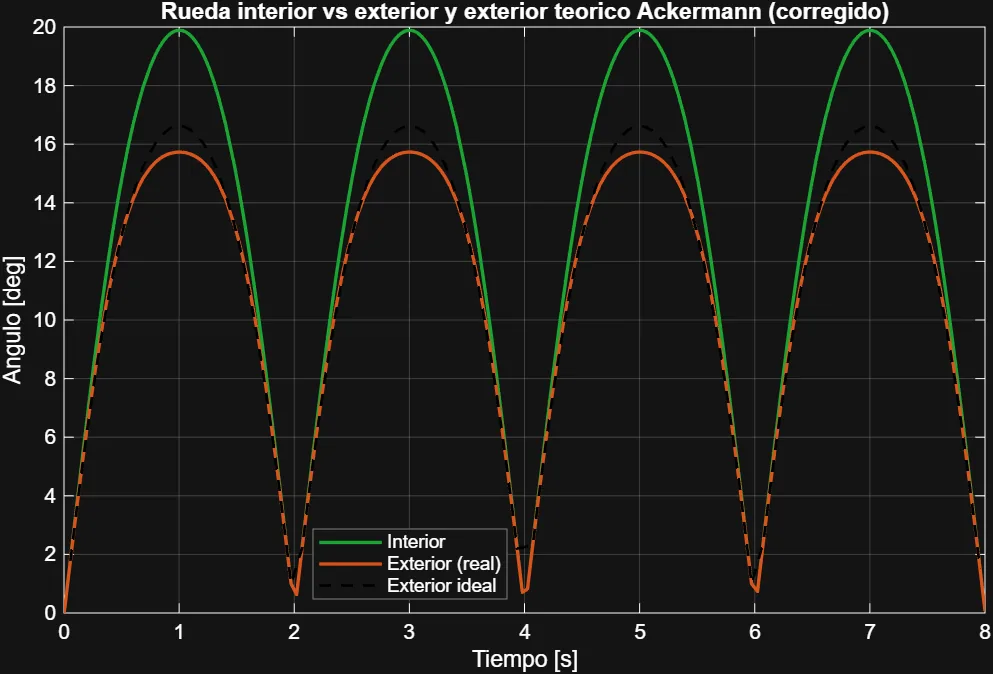
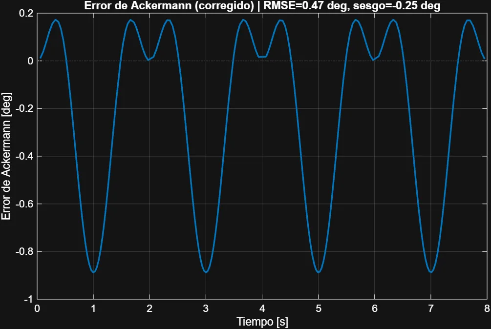
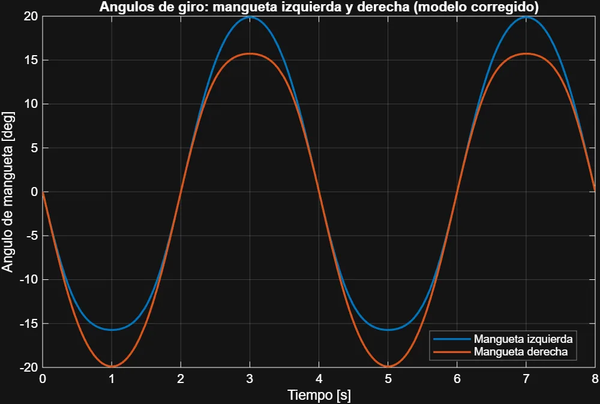
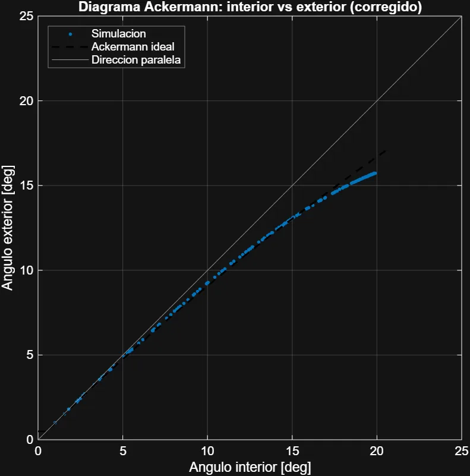

Case 02 · Final degree project
The outer wheel barely turned: I found the mechanism's dead point and redesigned the steering
I simulated in Simscape Multibody the steering of a go-kart designed in SolidWorks, found out why it did not meet Ackermann geometry, corrected it and validated the result in CAD.
- Project
- Final degree project “Design and integration of the steering and transmission system for an amateur go-kart”. BEng in Mechanical Engineering, University of Vigo. Grade: 8.5/10
- Date
- 2026
- Code
- github.com/estebanpinillaalva-spec/tfg-kart-direccion: MATLAB scripts, model, plots and the full thesis (in Spanish)
- Authorship
- CAD design of the go-kart done as a team with Martín. The simulation, analysis and redesign of the steering are my own work. I developed the MATLAB scripts by directing an AI agent.
The problem
In a corner, the inner wheel has to turn more than the outer one so that both follow concentric paths without slipping. That is Ackermann geometry. It matters even more on a go-kart because there is no differential. The design target was 100% Ackermann: using GeoGebra I calculated that the steering arm had to form 107.62° with the kingpin axis.
When I simulated the assembly in Simscape, the first version did not behave like that: the outer wheel barely turned, Ackermann exceeded 250%, the two sides responded differently and the mechanism reached a singularity at ±13°.
What I did
- From SolidWorks to Simscape. I exported the assembly and imported it with
smimportas a multibody model. - Diagnosis. The steering knuckles were correctly designed and checked, so I looked for the cause elsewhere: the steering plate. With the anchor point offset to the side and far from the tie rods, the four-bar linkage on the outer side worked close to its dead point and the outer wheel received almost no rotation.
- Redesign. I moved the anchor of both tie rods closer to the steering column axis, with a single central anchor. This makes the mechanism symmetric again.
- Parametric model built from code. With an AI agent I developed MATLAB scripts that build the corrected model with the real geometry (619.15 mm track, 1,056.57 mm wheelbase, 305 mm tie rod and 120 mm arm), simulate it, calibrate the arm and generate the plots and the animation.
- Validation in CAD. I articulated the steering in SolidWorks and measured the real angles to compare them with the simulation.
What went wrong and how I fixed it
- The first results gave an Ackermann of more than twice the ideal. Instead of explaining them away, I analysed the CAD model until I found that the error came from the steering plate.
- The simulation of the corrected model gave 127% Ackermann, a slight excess I attributed to small measurement errors. I cross-checked it against the articulated CAD, which gave 112% (17.81° / 14.81°).
Result
| Indicator | Side anchor (before) | Central anchor (after) |
|---|---|---|
| Simulated Ackermann % (right / left turn) | ≈253% / ≈238% | ≈127% / ≈127% |
| Error relative to the ideal outer wheel | −2.95° / −1.27° | −0.89° / −0.89° |
| Mechanism singularity | ±13° | ~24° |
| Symmetry between left and right turns | asymmetric | symmetric |
| Ackermann verified in CAD | — | 112% |





Limitations and next step
- The model is planar and kinematic: vertical kingpins, zero caster and kingpin inclination, no tyres and no forward speed.
- The physical steering stops still need to be sized; they must limit the steering angle below the singularity.
Tools
- SolidWorks
- MATLAB
- Simulink
- Simscape Multibody
- GeoGebra
- Mechanism kinematics